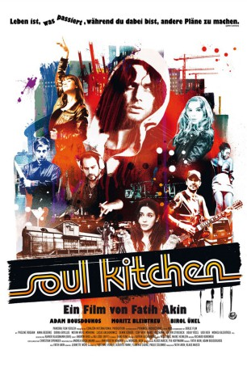

#1685 Soul Kitchen
 
 IMDB-Wertung: 7.3 / 10
IMDB-Wertung: 7.3 / 10  Metascore: 76
Metascore: 76 
Kneipenbesitzer Zinos ist vom Pech verfolgt: erst zieht seine Freundin Nadine für einen neuen Job nach Shanghai, dann erleidet er einen Bandscheibenvorfall. Als er in seiner Not den exzentrischen Spitzenkoch Shayn engagiert, bleiben auf einmal auch noch die ohnehin schon wenigen Stammgäste aus. Und als wäre das nicht schon genug, taucht auch noch sein leicht krimineller Bruder Illias auf und bittet ihn um Hilfe.Während Zinos noch überlegt, wie er den Laden los wird, um Nadine nach China folgen zu können, locken Musik und die ausgefallene Speisekarte immer mehr Szenepublikum an. Das "Soul Kitchen" rockt und boomt wie nie zuvor. Doch dann überschlagen sich die Ereignisse.
Jahr: 2009
Dauer: 99 Minuten
FSK: 12
Land: Deutschland Studio: Pandora Film VerleihTonspuren:
Untertitel:
Auflösung: 1080p (1920x1040) Größe: 6359 MB
Genre: Drama, Komödie
Regisseur: Fatih Akin
Drehbuch: Fatih Akin, Adam Bousdoukos
Soundtrack:
Darsteller:
 Moritz Bleibtreu als Illias Kazantsakis
Moritz Bleibtreu als Illias Kazantsakis Pheline Roggan als Nadine Krüger
Pheline Roggan als Nadine Krüger- Anna Bederke als Lucia Faust
- Birol Ünel als Shayn Weiss
 Dorka Gryllus als Anna Mondstein
Dorka Gryllus als Anna Mondstein Udo Kier als Herr Jung
Udo Kier als Herr Jung- Markus Imboden als Vater Nadine
 Peter Lohmeyer als Restaurantbesitzer
Peter Lohmeyer als Restaurantbesitzer- Jan Fedder als Meyer
 Philipp Baltus als DJ
Philipp Baltus als DJ- Adam Bousdoukos als Zinos Kazantsakis
 Wotan Wilke Möhring als Thomas Neumann
Wotan Wilke Möhring als Thomas Neumann- Lucas Gregorowicz als Lutz
- Demir Gökgöl als Sokrates
- Cem Akin als Milli
 Marc Hosemann als Ziege
Marc Hosemann als Ziege- Catrin Striebeck als Frau Schuster vom Finanzamt
- Ugur Yücel als Knochenbrecher
- Monica Bleibtreu als Nadines Großmutter
- Bernd Gajkowski als Trucker
- Herma Koehn als Gast
- Julia Wachsmann als Tanja
- Gudrun Egner als Mutter Nadine
 Gustav-Peter Wöhler als Nörgelgast
Gustav-Peter Wöhler als Nörgelgast- Zarah Jane McKenzie als Kellnerin
- Senol Ugurlu als Häftling
- Francesco Fiannaca als JVA Beamter
- Hendrik von Bültzingslöwen als Assistent von Frau Schuster
- Simon Goerts als Tschako
- Arne Benzing als Bad Boy Boogiez
- Piotr Gregorowicz als Bad Boy Boogiez
- Hans Ludwiczak als Bad Boy Boogiez
- Jan Weichsel als Bad Boy Boogiez
- Bülent Celebi als Ali Davidson
- Peter Jordan als Notar
- Wolfgang Schumacher als Dr. Schlecht
- Maverick Quek als Han
- Fritz Renzo Heinze als Pfarrer
- Joana Adu-Gyamfi als Apothekerin
- Till Huster als Polizist
- Maria Ketikidou als Kommissarin
- Klaus Maeck als Deutscher im Wartezimmer
- Torsten Lemke als Patient
- Salman Kurtulan als Türke im Wartezimmer
- Ernest Hausmann als Afrikaner im Wartezimmer
- Lars Rudolph als Richter im Amtsgericht
- Emek Kavukcuoglu als Junger Makler
- Torben Karstens als Angry Customer , uncredited
- Inna Knaus als Prostituierte , uncredited
- Thomas Schunke als Dancer , uncredited
Datei: X:\2009(N-Z)\Soul Kitchen (2009, FSK12, 1920x1040).mkv seit 05.08.2015
Festplatte: HD 2009(G-Z)-2010(A-F)
 Es gibt insgesamt 99 Filme in der Gruppe '2009(N-Z)'
Es gibt insgesamt 99 Filme in der Gruppe '2009(N-Z)'